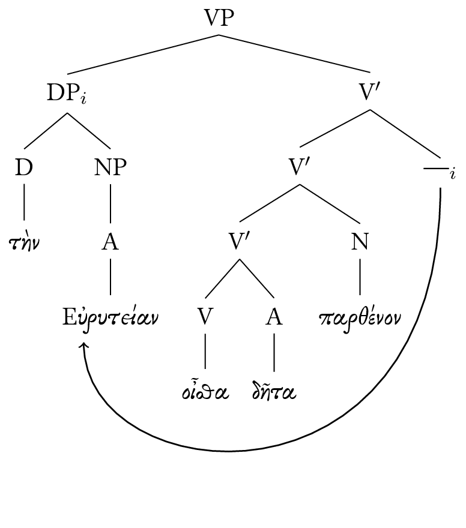
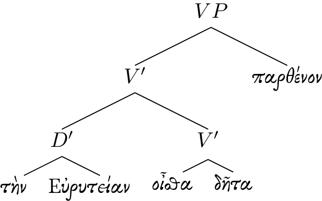
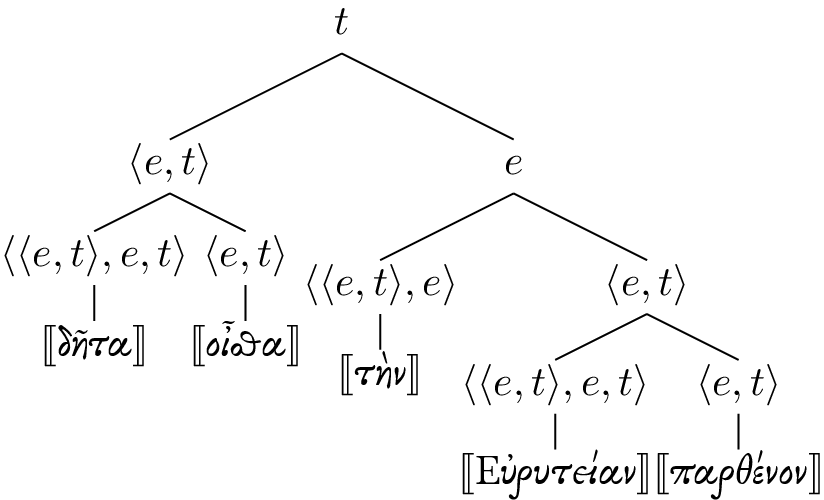
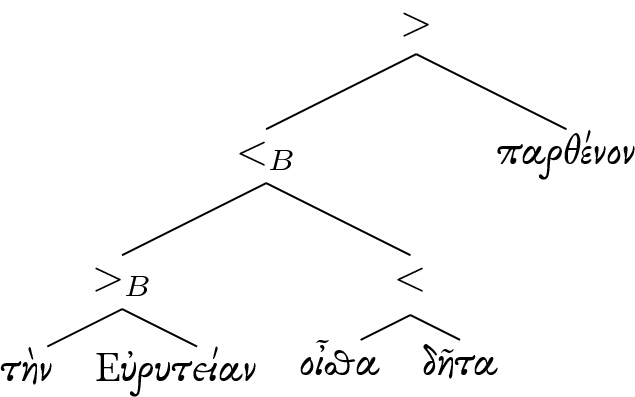
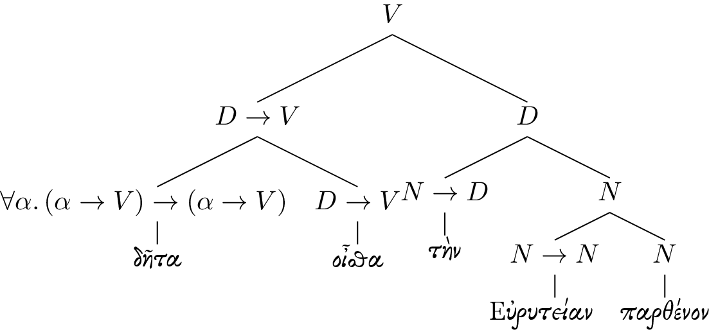

This is the first in a series I intend to write in regard to the syntax of Ancient Greek hyperbaton, and what can be done about it formally using a combinatory categorial grammar1. We will begin with a pathological example of \(Y_1\) hyperbaton from Sophocles’ Trachinian Women:
the-*acc* of-Eurytus-*acc* know-*2.sing* of-course girl-*acc*
A Transformational Approach
Using the null head modifier theory presented by Devine & Stephens2, we can actually get a reasonable transformational representation of the sentence:

The central conceit is a DP can serve to provide additional information to something it adjoins to; intuitively, this is the same as when we say in English, “You know that dog, the crazed one…”. The null head modifier presentation jives very nicely with other peculiarities about Greek, including how modified DPs often surface with repeated determiners, as follows: τὰς παρθένους τὰς αἰχμαλώτους.
But there are a few problems which I can see with this approach: Devine & Stephens fail to provide a convincing account for why a verb may take a bare noun as its argument, and how a null head modifier DP adjoining to \(V\prime\) can be semantically associated to that noun. And so, whilst retaining the insight of the null head modifier presentation (that there is some way in which the τὴν Εὐρυτείαν is on its own, but informs the interpretation of παρθένον), we must move onto something else which allows for a more compositional approach, whence a sound semantic interpretation may be derived.
The Combinatory Approach
The ideal result is one which allows us to start with a somehow fully lexically licensed structure like this (bear with me):

And then have this structure be translated to something like the following for semantic interpretation, using only the normal rules of the system and no special cases:

A Typed Lexicon
Let’s imagine a simple, parametric type system with a set of base categories \(N, D, V\). This should be sufficient to build up a lexicon:
- δῆτα\(: \forall \alpha. (\alpha\to V)\to\alpha\to V\)
- οἶσθα\(: D\to V\)
- τήν\(: N\to D\)
- Εὐρυτείαν\(: N\to N\)
- παρθένον\(: N\)
Those familiar with categorial grammar will note that for the moment I am eschewing the traditional notation for function types in favor of something a bit more familiar.
Combinators: Application and Composition
We now introduce some primitive combinators, function application and function composition, in both the left and right directions:
\[\begin{align} \frac{\vdash f : (\sigma\to\tau) \qquad \vdash x : \sigma}{\vdash (f > x) : \tau}\tag{right-app} \end{align}\]
\[\begin{align} \frac{\vdash f : (\sigma\to\tau) \qquad \vdash x : \sigma}{\vdash (f > x) : \tau}\tag{left-app} \end{align}\]
\[\begin{align} \frac{\vdash f : (\sigma\to\tau) \qquad \vdash g : (\rho\to\sigma)}{\vdash (f >_B g) : (\rho\to\tau)}\tag{right-comp} \end{align}\]
\[\begin{align} \frac{\vdash f : (\sigma\to\tau) \qquad \vdash g : (\rho\to\sigma)}{\vdash (g <_B f) : (\rho\to\tau)}\tag{left-comp} \end{align}\]
Function application corresponds to satisfying an argument on a head, whereas function composition corresponds to deferring the satisfaction of an argument; you will see why this is useful in a moment.
These combinators, then, form a more sophisticated version of the familiar MERGE operation, which is used to combine two terms in order to project. By providing variants of our merge combinators in either direction, we are sure to have the theoretical power to express word order which is not uniformly left or right branching. In order to be sufficiently restrictive, though, (lest our theory generate word orders which are ungrammatical), we need to put some notion of direction into the arrow types that we are using for our lexicon. In fact, this is exactly what is done traditionally in CCGs, but for the purpose of simplicity in presentation, I omit it here.
The combinators presented above suffice to construct our sentence as a well-typed term:

Locality for Semantics by Normalization
It is nice that we can construct our sentence as a syntax tree without any crossing lines, but it is hardly in a state to be interpreted semantically node-by-node. We need to recover the locality of relations, which can be done by normalizing the tree, in the same way as one normalizes lambda expressions. The goal, then, is to transform such a derivation as above into a derivation which contains only lexical items and \(\textit{right-app}\): and this is normalization.
Translation into Logical Form
We can indeed normalize our tree into something that looks like this:

But for the purpose of syntax itself, there’s really no such need; locality is only useful for evaluating a sentence into a semantic proposition. And so prior to normalization, we should provide rewrite rules to translate syntactic derivations into semantic ones. In the style of Montague, we will use type \(e\) to represent entities, \(t\) to represent propositions, and \(\langle\alpha,\beta\rangle\) to represent function types:
\[\begin{align} N &\mapsto \langle e,t \rangle\tag{NPs are properties}\\ D &\mapsto e\tag{DPs are entities}\\ V &\mapsto t\tag{VPs are propositions}\\ \sigma\to\tau &\mapsto \langle \sigma, \tau\rangle \end{align}\]
Next, we need to provide semantic denotations for our lexicon:
\[\begin{align} \gk{δῆτα} &\mapsto \lambda x.\,x\\ \gk{οἶσθα} &\mapsto \lambda x.\,\text{“you know”}(x)\\ \gk{τὴν} &\mapsto \lambda p.\,\iota z.\,p(z)\\ \gk{Εὐρυτείαν} &\mapsto \lambda p.\,\lambda x.\, p(x) \land \text{“of Eurytus”}(x)\\ \gk{παρθένον} &\mapsto \lambda x.\,\text{“girl”}(x) \end{align}\]
And finally, we give denotations to the merge combinators as follows:
\[\begin{align} f > x &\mapsto f(x)\\ x < f &\mapsto f(x)\\ f > _B g &\mapsto \lambda x.\,f(g(x))\\ g < _B g &\mapsto \lambda x.\,f(g(x))\\ \end{align}\]
Using this program, we can evaluate our syntactic tree into the uninterpreted semantic one from above, which I reproduce below:
If we normalize this construction, we get the logical form of our sentence:
\[\begin{align} \text{“you know”}(\iota z.\, \text{“girl”}(z) \land \text{“of Eurytus”}(z)) : t\tag{LF} \end{align}\]
A very nice (and short!) exposition to CCG is given by Mark Steedman.↩
Devine & Stephens, Discontinuous Syntax: Hyperbaton in Ancient Greek provides some useful preparatory reading on the semantics and pragmatics of Greek hyperbaton, but it’s by no means necessary for understanding what I shall be presenting.↩
Want to comment?
I’m @jonsterling on Twitter and App.net.